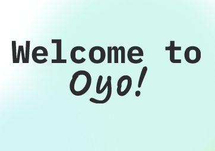

UX and interface design / Oyo!
Designed in four weeks.
Tested twice.
Oyo! is a social app concept that explores how interface design shapes attention. I took it from brief to a fully interactive Figma prototype in four weeks, testing it with classmates along the way.

01 / The brief
Six screens.
One clear task flow.
What did the project ask for?
Design an interactive app prototype of at least six screens, defining the app's goal, its typical user and the main action a visitor should take. Required screens: a home screen, a form, a form confirmation, and scrolling content.
The brief framed it as a graphic design project as much as an app design project, so visual identity, type and motion mattered as much as the flow.
02 / Process
From task flow
to working prototype.
- Brief and task flowDefined the app, its user and the path from the home screen to the main action.
- Lo-fi wireframes and first user testClassmates tried the wireframes so problems surfaced before any visual design.
- MoodboardSet the visual direction: a green palette, Helvetica and playful motion.
- High-fidelity buildBuilt the screens, an onboarding sequence, bottom navigation and animated transitions in Figma.
- Style guide and second user testFinished the style guide and ran a second round of testing on the near-final prototype.
- Final presentationPresented the interactive prototype to the class.
03 / The screens
Onboarding, navigation, content.


04 / Testing
What classmates
told me.
How was it tested?
About 20 classmates tried Oyo! across two in-class sessions: once on lo-fi wireframes and once on the near-final prototype. Feedback came through hands-on use and written critique. I did not record task times or success rates; that is the first thing I would add next time.
- Navigation and motionTesters said the bottom navigation, fades and transitions made the prototype feel like a real, professional app.
- OnboardingShowing how the app works before entering it, with sliding images, helped people understand the app quickly.
- Contrast problemOne tester pointed out that the navigation colors did not contrast enough, so the active tab was hard to tell apart.
05 / Outcome
Full marks.
One lesson in contrast.
What was the result?
The final prototype met every required screen and received full marks (300/300). The visual system of a green palette and Helvetica, with animated transitions, came through as modern and realistic in critique.
What I learned
The contrast note was the most useful feedback. Navigation states need to be clear for everyone, not only look good. Since then I have audited real websites against WCAG contrast and labeling rules, and I now check contrast while I design instead of after.
Next steps
What I would do next
- Fix navigation contrastRaise the active tab to at least a 4.5:1 contrast ratio and add a second cue, such as an icon fill or underline.
- Measure the testGive five people the same three tasks and record completion and time.
- Check every screen for accessibilityRun a contrast and screen reader pass across all screens, not only the navigation.